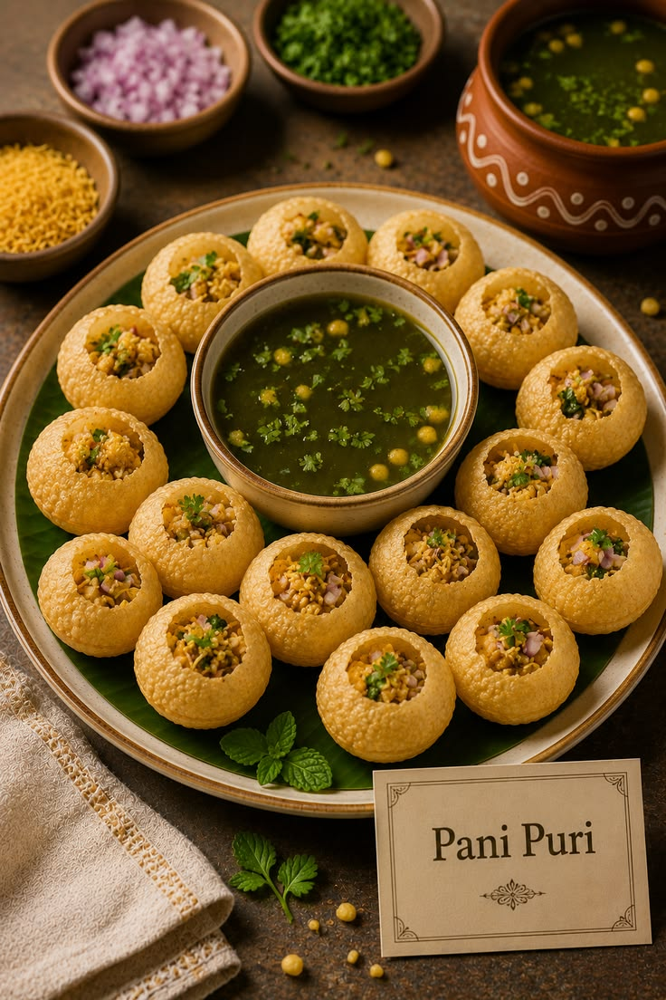
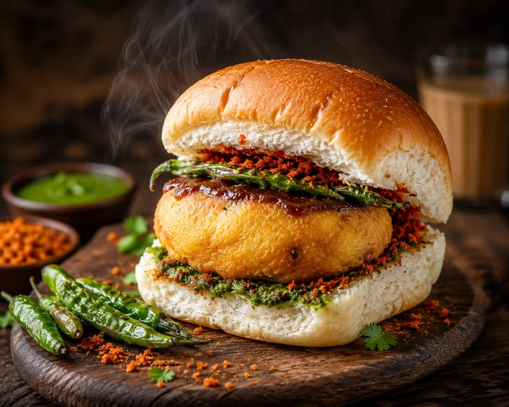
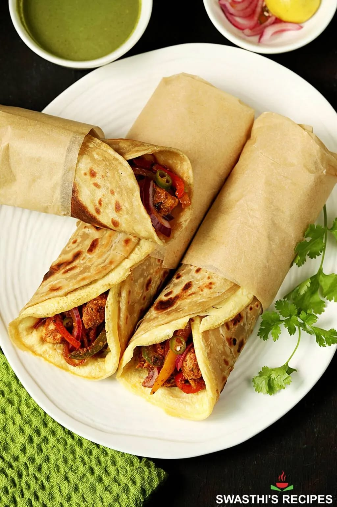
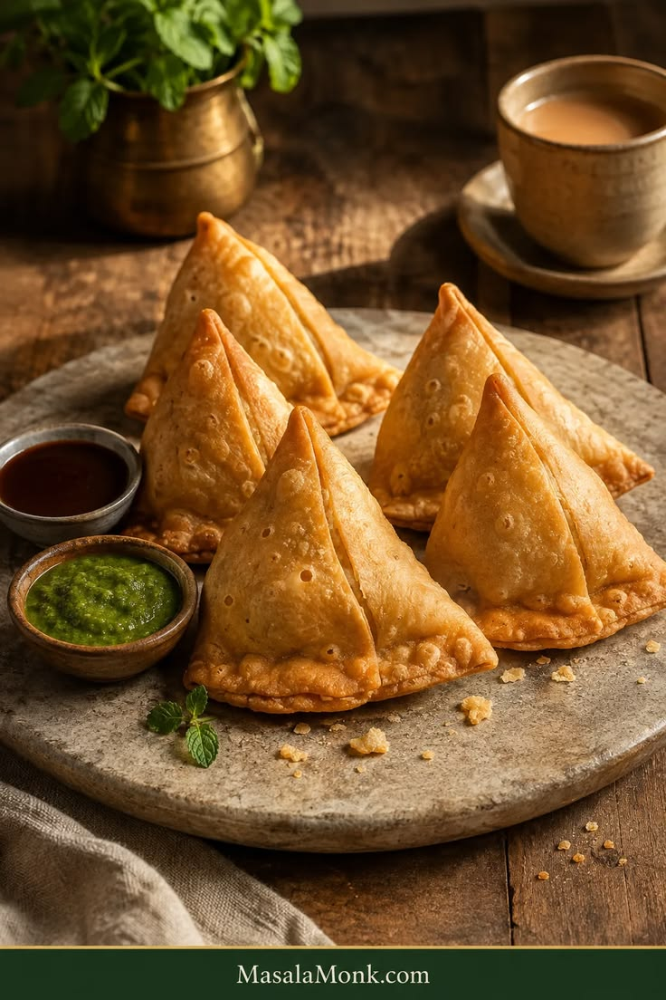
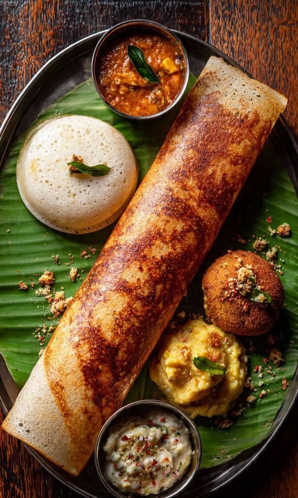

FOOD & CUISINE
Discover the flavours, traditions and regional dishes that make Indian cuisine unforgettable.
A JOURNEY THROUGH FLAVOUR
Indian cuisine changes from region to region. From spicy curries and fragrant biryanis to street food and traditional sweets, every destination offers something different to discover.
EXPLORE INDIAN CUISINE
North Indian
Rich curries, breads, grilled dishes and aromatic spices are common in North Indian cuisine.
Try:Butter Chicken, Chole Bhature, Naan and Paneer dishes.
South Indian
Rice, coconut, lentils and spices form the foundation of many South Indian dishes.
Try:Dosa, Idli, Sambar, Vada and traditional meals.
East Indian
Eastern India is known for rice-based meals, fish, vegetables and distinctive sweets.
Try:Macher Jhol, Luchi, Mishti Doi and Rasgulla.
West Indian
Western cuisine ranges from Gujarati vegetarian food to spicy Maharashtrian and Goan dishes.
Try:Dhokla, Pav Bhaji, Vada Pav and Goan seafood.
INDIA'S STREET FOOD
Some of India's most memorable flavours can be found on busy streets, local markets and small food stalls.

Momos
Popular steamed or fried dumplings enjoyed especially in northern and northeastern regions.

Pani Puri
A popular street snack filled with spiced water, potato and chutneys.

Vada Pav
A Mumbai favourite made with a spiced potato fritter served inside a bun.

Kathi Roll
A popular Kolkata street food featuring fillings wrapped inside a paratha.

Samosa
Crispy pastry filled with spiced ingredients and commonly served with chutney.

Dosa
A thin, crispy South Indian dish traditionally served with sambar and chutneys.
MAKE FOOD PART OF YOUR JOURNEY
Visit local markets, try regional specialities and experience the food culture of every destination.
EXPLORE EXPERIENCES →FOOD TRAVEL TIPS
Try Local Food
Regional dishes are often the best way to experience the character of a destination.
Stay Hydrated
Carry drinking water and stay hydrated, especially while exploring in hot weather.
Eat Fresh
Choose busy food stalls where food is prepared fresh and served regularly.
Explore Markets
Local markets are great places to discover regional snacks and traditional flavours.